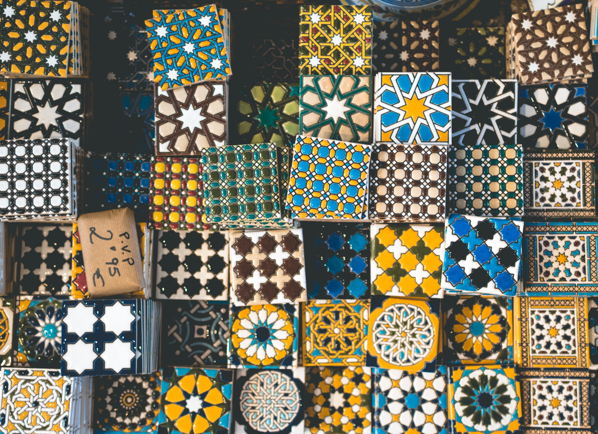

Galeri


5 Kamar Tidur Springbed ( 2 AC, 3 Fan)
2 Kamar Mandi
Ruang keluarga beserta TV
Dapur, kompor dan dispenser
Kapasitas rumah hingga 10 orang
Tempat parkir
Citro Homestay Solo terletak di tengah kota Solo yakni di Jln. Pasopati no 5, Tipes, Serengan, Solo. Banyak tempat yang bisa dijangkau dengan waktu singkat dari area ini diantaranya :
Ingin wisata kuliner khas Solo? Tentu bisa! Citro Homestay Solo juga dekat dengan tempat makan terkenal di Solo diantaranya :
dan masih banyak lagi
Rp 900.000*
*maksimal 10 orang
Rp 50.000 **
**per orang per malam